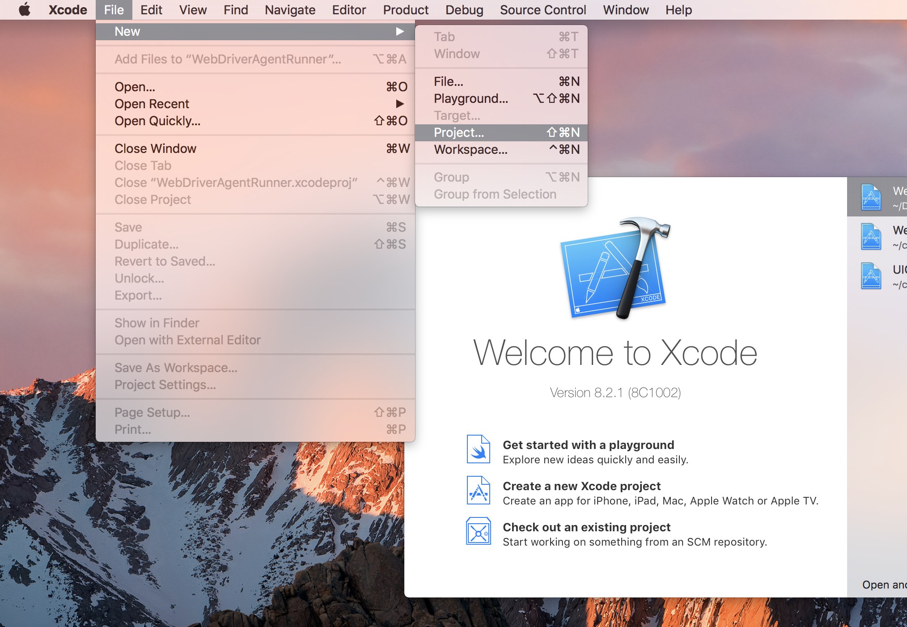

在 iOS 真机上运行 Appium
Appium 已支持真机的测试。
使用 Appium 运行你的测试
把设备的 udid 传给 udid 这个 capability。把应用的 bundle ID 传给 app 这个 capability，如果你的应用已经在手机上安装好了。如果应用未安装，那么需要将 .ipa 或者 .app 文件的路径传给 app 这个 capability。一旦你的设备和应用已经配置好，你就可以在那个设备上运行测试了。
Desired Capabilities
通过在测试里使用以下的 capability，你可以在某个设备加载这个应用：
app或者bundleId- 指定应用，或者如果应用已经安装到手机上了，只需简单地指定应用的 bundleID。这样 Appium 就可以加载该应用了。udid- 被测设备的 id。如果只有一台设备连接的时候，可以设置为auto，Appium 能自动识别设备 id 并使用它。
更多的细节参考 Appium server capabilities
必备的软件
Appium iOS 真机支持依赖一个重要的第三方软件套件 libimobiledevice，使用 Homebrew 可以轻易地安装好。
brew install libimobiledevice
在 Xcode 7 和 iOS 9.3 或者以下，配置 iOS 真机设备测试
在 iOS 9.3 或者以下，使用 Xcode 7.3 或者以下对真机进行自动化 (比如，基于 Instruments 的测试) 需要相对较少的配置。主要就是需要你的应用是使用开发者证书签名的。 不幸的是，苹果移除了所有使用老版本 Xcode 的文档，不过你可以从这里，这里找到如何操作。
更详细地说， 在真机上开始测试, 你需要如下步骤：
- 一个 Apple Developer ID 和一个有效的配置好开发者证书和 provisioning profile 的开发者账号。
- 要在真机上测试，一个有效的 iOS 开发证书和 Provisioning Profile 是必须的。被测应用也必须被签名。更多信息可以在 Apple documentation 找到。
- 一个苹果设备： iPad 或者 iPhone 都可以。确保已经在 Xcode 里已经配置好了开发机。
- 一个已经签名的
.app或则.ipa文件，或者使用源码编一个。 - 一台 Mac 电脑，装好了 Xcode 和 Xcode Command Line Developer Tools。
Appium 使用 ideviceinstaller (libimobiledevice 套件的一部分)来处理应用安装问题。但是有时候使用 Xcode 提前安装好应用确保没有问题更加容易。(更多参考 iOS deploy)。
排障思路
- 确保 UDID 是无误的，可以通过 Xcode Organizer 或者 iTunew 查看。留意 UDID 是很长的字符串（20+ 字符）。
- 确保你可以在模拟器运行你的测试。
- 重复确认通过 Instrumens 是否可以启动你的自动化。
- 确保 Instruments 不在运行状态中。
- 确保 UI Automation 在你的设备已经打开。设置 -> 开发者 -> 使用 UI Automation。
在 Xcode 8 和 iOS 9.3 以上配置 iOS 真机设备测试
作为对 libimobiledevice 依赖的补充，Appium 对 iOS 9.3 及以上和 Xcode 8 及以上的支持依赖 ios-deploy,
通过 npm 可以方便地安装：
npm install -g ios-deploy
不幸地是，苹果改变了以往的测试方法。新的方法需要安装一个帮助应用到设备上去，通过这个应用，自动化测试才能进行。说起来挺简单，但是代码签名和生成供开发和测试的应用，让人有一点头疼。
Appium 安装的应用叫 WebDriverAgent-Runner (可以在这里)找到，要想安装这个应用，Appium需要能配置这个构建。
基本 (自动化) 配置
在 iOS 真机上设置和运行 Appium XCUItest，最方便的方法是使用自动化配置策略。有两种方式：
- 使用
xcodeOrgId和xcodeSigningIddesired capabilities:
{
"xcodeOrgId": "<Team ID>",
"xcodeSigningId": "iPhone Developer"
}
- 在你的文件系统里创建一个
.xcconfig文件，内容是：
DEVELOPMENT_TEAM = <Team ID>
CODE_SIGN_IDENTITY = iPhone Developer
以上任何一个方式，Team ID 是一个 10 个字符长的字符串，苹果生成这个字符串，分配给你的团队。你可以在你的开发者账号里找到你的 Team ID。登录 developer.apple.com/account，然后点击边栏上的 Membership。你的 Team ID 在 Membership Information 部分的团队名字下面。你也可以在 keychain 里的 iPhone 开发者证书里的 "Organizational Unit" 属性找到你的 Team ID。
注意这是互斥的策略；要么用 xcodeConfigFile capability， 要么用 xcodeOrgId and xcodeSigningId 的组合。
当以上的配置搞定后，只需再指定 udid capability 就可以在真机上开始测试了。
如果还是不工作的话，通常会在 Appium server 的日志里显示一些错误如：info XCUITest xcodebuild exited with code '65' and signal 'null'。这通常表示必要的代码签名没配置正确。 去看下 Basic (manual) configuration
这个文档，参试修复下。
如果 WebDriverAgentRunner 成功的在设备上安装好，但是在 Appium server 日志里还是有如下错误信息：
2017-01-24 09:02:18.358 xcodebuild[30385:339674] Error Domain=com.apple.platform.iphoneos Code=-12 "Unable to launch com.apple.test.WebDriverAgentRunner-Runner" UserInfo={NSLocalizedDescription=Unable to launch com.apple.test.WebDriverAgentRunner-Runner, NSUnderlyingError=0x7fa839cadc60 {Error Domain=DTXMessage Code=1 "(null)" UserInfo={DTXExceptionKey=The operation couldn’t be completed. Unable to launch com.apple.test.WebDriverAgentRunner-Runner because it has an invalid code signature, inadequate entitlements or its profile has not been explicitly trusted by the user. : Failed to launch process with bundle identifier 'com.apple.test.WebDriverAgentRunner-Runner'}}}
2017-01-24 09:02:18.358 xcodebuild[30385:339674] Error Domain=IDETestOperationsObserverErrorDomain Code=5 "Early unexpected exit, operation never finished bootstrapping - no restart will be attempted" UserInfo={NSLocalizedDescription=Early unexpected exit, operation never finished bootstrapping - no restart will be attempted}
Testing failed:
Test target WebDriverAgentRunner encountered an error (Early unexpected exit, operation never finished bootstrapping - no restart will be attempted)
这个问题是因为开发者在这台设备上不被信任。如果你在设备上手动运行 WebDriverAgentRunner，你会看到一个错误页面弹出来：

你可以去设备中的 Settings => General => Device Management 信任这个开发者，允许 WebDriverAgentRunner 运行 (参考 Apple
documentation for more information).
基本 (手动) 配置
很多情况，基本的自动配置满足不了需求。这通常和真机运行上的代码签名和项目配置有关。这常常发生在免费的开发者账号上，免费的开发者账号不能创建 wildcard provisioning profile，也不能为应用创建默认的配置文件。
Xcode 创建 provisioning profile 失败 的错误如下：

最容易的解决方案就是打开 Xcode创建一个新工程：

类型不重要，只要是 "iOS"。用最简单的 "Single View Application" 即可：

重要的地方是要用唯一的 "Product Name" 和 "Organization Name". 然后，在这里，指定你的 "Team"。

你可以在 "Project" tab 确认 provisioning profile 是否创建成功。

或者去你的账号首选项里看看 provisioning profile：

现在你就有了一个有效的 provisioning profile。 记住你关联这个 profile 的 bundle id，然后放到 updatedWDABundleId 这个 desired capability 里。然后跟着前面的自动配置教程操作即可。
全部手动配置
另外，可以手动把 provisioning profile 和项目关联在一起。 (记住如果使用这个方法，每次 WebDriverAgent 更新，都要做一次。所以我们不推荐这个方法)：
- 找到你的 Appium 的安装目录
$ which appium
/path/where/installed/bin/appium
- 假设安装目录是：
/path/where/installed/bin/appium，那么WebDriverAgent在/path/where/installed/lib/node_modules/appium/node_modules/appium-xcuitest-driver/WebDriverAgent。 打开终端到那个目录，然后按以下命令操作：
mkdir -p Resources/WebDriverAgent.bundle
./Scripts/bootstrap.sh -d
-
在 Xcode 里打开
WebDriverAgent.xcodeproj。 对于WebDriverAgentLib和WebDriverAgentRunner两个 target，都选择 "General" tab 里的 "Automatically manage signing" 然后选择你的Development Team。这也会自动选择Signing Ceritificate。大概的样子如下：
- Xcode 可能会创建不了
WebDriverAgentRunner的 provisioning profile：

- 这时候需要在 "Build Settings" tab 里手动改 bundle id。把 "Product Bundle Identifier"
从
com.facebook.WebDriverAgentRunner改成 Xcode 能采用的：

- 在回到 "General" tab 里的
WebDriverAgentRunnertarget，现在你可以看到一个 provisioning profile 创建成果了:

- Xcode 可能会创建不了
-
最后，你可以验证一切都 OK 了。 构建这个项目：
xcodebuild -project WebDriverAgent.xcodeproj -scheme WebDriverAgentRunner -destination 'id=<udid>' test
如果成果了，最后的输出会像下面这样：
Test Suite 'All tests' started at 2017-01-23 15:49:12.585
Test Suite 'WebDriverAgentRunner.xctest' started at 2017-01-23 15:49:12.586
Test Suite 'UITestingUITests' started at 2017-01-23 15:49:12.587
Test Case '-[UITestingUITests testRunner]' started.
t = 0.00s Start Test at 2017-01-23 15:49:12.588
t = 0.00s Set Up
- 要完整验证的话，你可以试试看访问 WebDriverAgent server 的状态 (注意： 你必须和手机设备同一个网段，你可以从 Settings => Wi-Fi => Current Network 找到手机当前的 IP。):
export DEVICE_URL='http://<device IP>:8100'
export JSON_HEADER='-H "Content-Type: application/json;charset=UTF-8, accept: application/json"'
curl -X GET $JSON_HEADER $DEVICE_URL/status
你会得到如下输出：
{
"value" : {
"state" : "success",
"os" : {
"name" : "iOS",
"version" : "10.2"
},
"ios" : {
"simulatorVersion" : "10.2",
"ip" : "192.168.0.7"
},
"build" : {
"time" : "Jan 23 2017 14:59:57"
}
},
"sessionId" : "8951A6DD-F3AD-410E-A5DB-D042F42F68A7",
"status" : 0
}